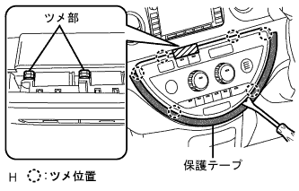
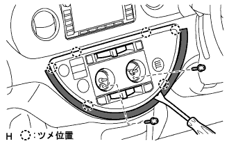
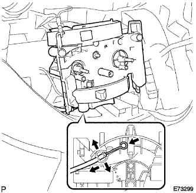
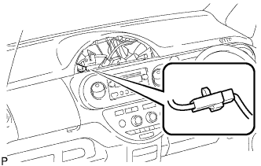
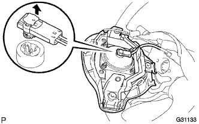
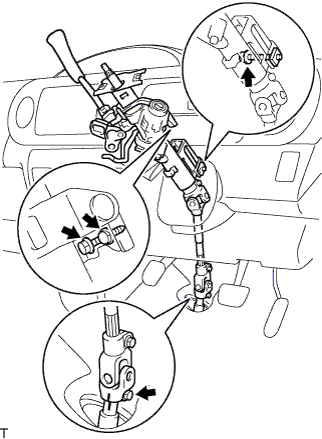

Instrument panel SUB-ASSY LWR removal |
| 1. Bolts, screws, nut lists |

| 2. Battery minor Starminal cut off |
| 3. Front doorskuff plate RH removal |
 |
Pull it up by hand, remove the claws, and remove the front door skirt plate RH.
| 4. Remove the cowl side trim board RH |
 |
Remove the claws and remove the cowl side trim board.
| 5. Front door opening trim Weather strip RH is removed |
| 6. Remove the front pillar garnish LWR RH |
 |
Pull up from the rear end of the vehicle and remove 5 places of claws.
Pull the back of the vehicle and remove the front pillar garnitsui LWR RH.
| 7. Remove the front pillar garnish RH |
 |
Pull it from the upper part of the garnit to the inside of the vehicle, remove the clip, and remove the front pillar garnish RH.
| 8. Front doorskuff plate LH removal |
 |
Pull up by hand, remove the claws from behind the vehicle, and remove the front door skirt plate LH.
| 9. Reardoor opening Trim Weather Strip LH removed |
| 10. Pillar No.1 Garnish LH removed |
Remove the claws and remove the pillar No.1 Garnitsui LH.
| 11. Remove the front pillar garnish LH |
 |
Pull it from the upper part of the garnish to the inside of the vehicle, remove the clip, and remove the front pillar garnish LH.
| 12. Remove the front pillar garnish LWR LH |
 |
Remove the four claws and remove the front pillar garnitsui LWR LH.
| 13. Instrument cluster finish panel No.1 |
 |
Pull the instrument cluster fuinitsui panel to the rear of the vehicle, remove the eight claws, and remove the instrument cluster fuinitsui panel.
| 14. Remove the combination meter asser |
Take off two squeegees.
Pull the combination sijon meter ASSY behind the vehicle and remove the critpo.
 |
Cut the connector and remove the combination sijon meter ASSY.
| 15. Globe Compartment Door Sub-Asset |
 |
Remove two screws <j> and remove the grab compartment door.
| 16. Instrument panel register Assy No.1 |
 |
Pull the instrument panel register Assistor ASSY No.1 to the rear of the vehicle, remove the five claws, and remove the instrument panel register ASSY No.1.
| 17. Instrument cluster finish panel SUB-ASSY CTR |
Lower the shift lever and tilt down the steering.
 |
Pull the instrument cluster foinitsu panel CTR behind the vehicle, remove the 12 claws, and remove the instrument cluster hinitsu panel CTR.
| 18. Instrument panel finish plate removed |
 |
Remove one screw <b> one, pull the instrument panel fuinitsu shiyu plate behind the vehicle, remove the four claws, and remove the instrument panel fuinitsui plate.
| 19. Centa Cluster Module Control ASSY removes (A / C Auto) |
|  |
Put a protective tape on the instrument panel LWR, remove the six claws (because the gaps are narrow), remove the six claws (because the gaps are narrow), and separate the Center Cluster Modizu Control ASSY.
Cut each connector and remove the center crestamodizu control ASSY.
| 20. Control knob SUB-ASSY removal (A / C manual) |
 |
Remove two Hita control knobs.
| 21. Instrument cluster finish panel SUB-ASSY LWR CTR removed (A / C manual) |
|  |
Put a protective tape on the instrumental panel LWR.
Take off two screws.
The instrument cluster finish panel Assemo LWR CTR is used to remove the six claws using a clip remover.
Cut each connector and remove the instrument cluster finish panel ASSY LWR CTR.
| 22. Air conditioner control ASSY removes (A / C manual) |
 |
Remove the three places of claws and disconnect the air conditioner control ASSY.
Air Mix Dan Papon Round Cable Cut off
 |
Spread the clamp part of the clamp part of the air mix dan parcontrol cable to the left and right, pull out the outa cable from the cable clamp part and disconnect the inner cable.
Defrosta dan passon troll cable cut off
 |
Spread the clamp of the clamp part of the defrostan passorot cable to the left and right, pull out the outa cable from the cable clamp part and disconnect the inner cable.
Air Inlet Dan Puptrol Cable Cut (excluding cold region specification car)
|  |
Spread the clamp of the clamp portion of the air -in leette dampon control cable to the left and right, pull out the outa cable from the cable clamp and separate the inner cable.
Remove the air conditioning yona control ASSY.
| 23. Instrument panel passenger Airbag ASSY connector cuts |
|  |
Instrument panel passenger airbag Cut the connector for ASSY.
| 24. Instrument panel W/Passenger Airbag ASSY |
Remove the cover in the grabbox, and remove the passenger airbag fixing bolt <a> from there.
Remove the screw <c> or <d> 4.

Pull the front side of the instrument panel upward, remove the seven claws, and separate the central connector and clamp.
Be careful not to damage the steering wheel ASSY, and remove the instrument panel together with passenger airbags and ducts.
Remove the screws <b> two, and remove the side defrotorste nozzle duct No.2 from the instrument panel W/ Passenger Airbag ASSY.
Remove the screws <b> two, and remove the Hita Tsugu register duct No.3 from the instrument panel W/ Passenger Airbag ASSY.
Remove the screws <b> two, and remove the side -deflo -rosuled duct No.1 from the instrument panel W/ Passenger Airbag Assy.
Remove the screws <b> two, and remove the Hita Tsugu register duct No.1 from the instrument panel W/ Passenger Airbag Assy.
| 25. Instrument panel box ASSY removal |
 |
Remove the stopper and the hinge portion and remove the instrument panel box ASSY.
| 26. Instrument panel finish panel LWR CTR removed |
 |
Clip <c> 2 places, 8 claws, and remove the instrument panel finish panel LWR CTR.
Cut the connector of the power outlet socket and remove the instrument panel finish panel LWR CTR.
Remove the three screws and remove the instrument Katsup holder.
| 27. Instrument panel finish panel LWR removed |
 |
Clip <a> Remove two places and five claws.
Cut the food opener.
Cut each connector and remove the instrument panel fuinitsui panel LWR.
| 28. Confirm the front tire straight state |
| 29. Horn button ASSY removes |
Use a torx soketsu trench (T30) to loosen the two torx bolts until they are spinning.
 |
Use a minus thin blade driver to pull out two torx bolts.
|  |
Pull out the horn button ASSY to the front.
Leave the lock using a minus thin blade driver, disconnect the connector for air bats, and remove the horn button ASSY.
| 30. Steering wheel ASSY removes |
 |
Remove the nut and mark the steering wheel ASSY and the steering main shiaft ASSY.
Use SST to remove the steering wheel ASSY from the steering column ASSY.
| 31. Steering column cover removed |
 |
Remove the three screws and remove the steering column cover.
| 32. Spiral cable SUB-ASSY |
Separate the air cross connector and connector from the spiral cable.
 |
Remove the three places of claws and remove the spiral cable from the turn signal.
| 33. Remove headlamps |
Cut the connector.
 |
Press the claws in the figure, remove the bite, and remove the head lamp damed switch ASSY.
| 34. Wind Shield Wiper Switch ASSY |
 |
Cut the connector.
Press the claw position in the figure, remove the bite, and remove the windshield pipus tsutsuchi ASSY.
| 35. Steering column hole cover plate is removed |
 |
Sprinkle two clips and remove the steering column hole cover plate.
| 36. Column Shift Transmission Control Cable ASSY separation |
Make the shift lever in N range.
Remove the nut and separate the control cable from Velcank.
 |
Use the pliers to insert the tip of the clip, remove the clip, and separate the control cable from the column ASSY.
Remove the clip and remove the control cable from the control cable bracket.
Use a flathead screwdriver to remove the three claws and pull out the control cable from the engine side.
| 37. Column Shift Parking Lock Cable ASSY |
Shrink the cable claws and separate the parking lock cable (column side).
Remove the bolt and disconnect the parking lock cable (pedal side).
| 38. Steering column ASSY removed |
Separate each connector and wire harness clamp from the steering column ASSY.
|  |
Loosen the three steering column ASSY mounting bolts.
Marked the steering interim day Iight Sijaft No.3 and the steering sleding yoke.
Remove the bolt and disconnect the steering interim day Iight Sijaft No.3 and the steering sliding yoke.
Remove the three column ASSY mounting bolts.
 |
With the steering column clamp and the instrument panel rein horsement ASSY removed, the steering column ASSY is removed.
| 39. Radio tuner opening cover W/Bracket removal |
| 40. Radio receiver ASSY W/Bracket removes |
| 41. Navigation receiver ASSY W/Bracket removed |
| 42. Instrument panel anid cover SUB-ASSY No.1 |
 |
Remove the clip <a> two, pull the upper part of the instrument panel and cover No.1 to the front, remove the nine claws, and remove the instrument panel and cover No.1.
| 43. Remove the cover |
Remove the claws and remove the cover.
| 44. Cowl side trim board LH removed |
 |
Remove the resin clip.
Remove the two claws and one clip, and remove the cowl side trim board LH.
| 45. Instrument panel to cowl blace CTR removal |
 |
Remove the bolt <u> 1 and 1 <k> nut <k> and remove the instrument panel tsuu cowl breath CTR.
| 46. Instrument panel lower w/Reinforce |

Remove the parking brake pedal and bolts at the top of the brake pedal.
Remove 8 bolts <a> 8 <e> 2, clips <b> and nuts <k> 2.
Each clamp and the connector are separated, confirming that there is no wire harness, and the instrument panel lower w / reinforce is removed together with the instrument panel registry RH.
Remove the screw << f or g or h >> 1, clip << b >> 2, and remove the instrument panel LWR from the instrument panel rein horsement.
Remove the screw <b> three and remove the instrument panel register connector rh from the instrument panel LWR.
Sprinkle the bolt, remove the door control computer with receiver and a smart key computer (smart key computer).